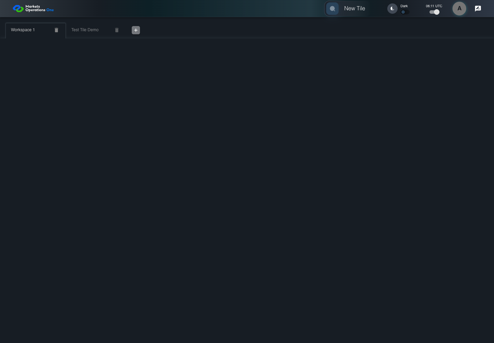

UI-SHL-018 open a tile from an occupied workspace
PASS · application/run-050/ui-shl-018-open-a-tile-from-an-occupied-workspace-a100ea577a3f-attempt-1 · ACTUAL_APPLICATION_LOCAL_SERVICES
Actual current React shell and browser storage. Controlled login/validation/activity renewal, UI-USER-01 permissions, catalog, and SystemJS React component. Markers, counter, and registered refresh callback are controlled fixture observations. No real business tenant or BFF authorization acceptance.
2026-10-22T06:11:05.904Z to 2026-10-22T06:11:08.641Z
Assertions and result · Artifact manifest · Exact run inputs and source hashes
Result SHA-256:a0cc01b3511b9571714dc66a181ca6de65c36c2b6ebedffeaadd52b65cd35f32Screenshot capture: CAPTURED. Named frames: 8.
Step screenshot bindings: COMPLETE. 7/7 canonical steps have execution screenshots.
Bindings measure structural coverage only. They do not establish screenshot content quality or relevance.
Screenshot content review: NOT_REVIEWED. Recorded context: 0/8 frames. Identical image bytes: 2 repeated frames. Recorded context does not establish human visual review.
Canonical step timeline
Given User A is authenticated as fixture UI-USER-01 with the case-specific permissions
Execution: PASSED.
1. step-01 Visible state after step 1: Given User A is authenticated as fixture UI-USER-01 with the case-specific permissions
2026-10-22T06:11:06.907Z · 1440×1000
Step: /Users/lushevol/code/github/ratan-release-impact/workbench/tasks/ui-test-coverage-20261022/test-cases.md:5936
SHA-256:365bc064ef8cf5c078cc86e5b2ea3862073c96c42997e29e292354516d2ec559And W1 contains Panel One and the drawer shows Test Tile
Execution: PASSED.2. step-02 Visible state after step 2: And W1 contains Panel One and the drawer shows Test Tile
2026-10-22T06:11:07.834Z · 1440×1000
Step: /Users/lushevol/code/github/ratan-release-impact/workbench/tasks/ui-test-coverage-20261022/test-cases.md:5937
SHA-256:1330715c1794885c668254d7065acc2d1329617dd7a9f2ad524ff9f4acadf297When User A clicks section with text "Test Tile" inside the tile group with subtitle "Demo" in the fixture category inside the right drawer titled "Tile Options"
Execution: PASSED.3. step-03 Visible state after step 3: When User A clicks section with text "Test Tile" inside the tile group with subtitle "Demo" in the fixture category inside the right drawer titled "Tile Options"
2026-10-22T06:11:07.954Z · 1440×1000
Step: /Users/lushevol/code/github/ratan-release-impact/workbench/tasks/ui-test-coverage-20261022/test-cases.md:5938
SHA-256:83b9a9ef94e0af42d64834b21d7f8d0cb7b14af1b04aee46c5da0d155f1737ecThen the tab count inside the tablist named "workspaces" equals 2
Execution: PASSED.
4. step-04 Visible state after step 4: Then the tab count inside the tablist named "workspaces" equals 2
2026-10-22T06:11:08.006Z · 1440×1000
Step: /Users/lushevol/code/github/ratan-release-impact/workbench/tasks/ui-test-coverage-20261022/test-cases.md:5939
SHA-256:83b9a9ef94e0af42d64834b21d7f8d0cb7b14af1b04aee46c5da0d155f1737ecImage bytes match frame 3. An unchanged image can be valid for consecutive assertions. This match does not establish correct step content.
And tab with source identity "Workspace Name textbox value Test Tile Demo" inside the shell tablist named "workspaces" is selected
Execution: PASSED.
5. step-05 Visible state after step 5: And tab with source identity "Workspace Name textbox value Test Tile Demo" inside the shell tablist named "workspaces" is selected
2026-10-22T06:11:08.054Z · 1440×1000
Step: /Users/lushevol/code/github/ratan-release-impact/workbench/tasks/ui-test-coverage-20261022/test-cases.md:5940
SHA-256:83b9a9ef94e0af42d64834b21d7f8d0cb7b14af1b04aee46c5da0d155f1737ecImage bytes match frame 4. An unchanged image can be valid for consecutive assertions. This match does not establish correct step content.
When User A clicks tab with source identity "Workspace Name textbox value Workspace 1" inside the shell tablist named "workspaces"
Execution: PASSED.6. step-06 Visible state after step 6: When User A clicks tab with source identity "Workspace Name textbox value Workspace 1" inside the shell tablist named "workspaces"
2026-10-22T06:11:08.194Z · 1440×1000
Step: /Users/lushevol/code/github/ratan-release-impact/workbench/tasks/ui-test-coverage-20261022/test-cases.md:5941
SHA-256:aa7b99c1646b719cb8c025158e6c2743066f2662e2a53f68fd0eeac56503d4bcThen text with text "Panel One" inside the W1 tabpanel is visible
Execution: PASSED.
7. step-07 Visible state after step 7: Then text with text "Panel One" inside the W1 tabpanel is visible
2026-10-22T06:11:08.261Z · 1440×1000
Step: /Users/lushevol/code/github/ratan-release-impact/workbench/tasks/ui-test-coverage-20261022/test-cases.md:5942
SHA-256:f862eeb986f24f7ef33120a69cc5b38feacab3e71778238e650376f93d0eb42e
Additional named frames
Screenshots establish visible state only. Assertions and traces support functional claims.